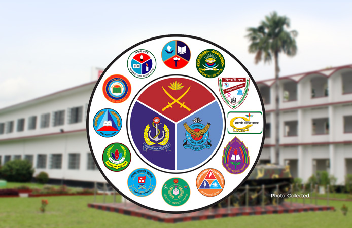

যুদ্ধবিদ্যা অর্জনকারী প্রশিক্ষণরত শিক্ষার্থীগণ ক্যাডেট বলে পরিচিত। সেই ক্যাডেট তৈরির জন্য যে কলেজ তাকে ক্যাডেট কলেজ বলা হয়।
বাংলাদেশে মোট ১২ টি ক্যাডেট কলেজ রয়েছে। এরমধ্যে ৯ টি ছেলেদের জন্য ও ৩ টি মেয়েদের জন্য নির্ধারিত।
ক্যাডেট কলেজ কাকে বলে ?

১. ক্যাডেট কলেজ ধারণার ইতিহাস :
+
ক্যাডেট কলেজ সামরিক বাহিনী পরিচালিত বিশেষ ধরনের শিক্ষা প্রতিষ্ঠান। এই ধরনের শিক্ষাপ্রতিষ্ঠানের ধারণা সৃষ্টি হয়েছিল সামরিক বাহিনীতে যোগ্য কর্মকর্তা তৈরীর চেতনা থেকে।
অটো ভন বিসমার্ক এর যুগে জার্মানিতে প্রথম ক্যাডেট কলেজ ব্যবস্থা প্রবর্তিত হয়। সামরিক বাহিনীতে যোগ্য কর্মকর্তা তৈরিতে অল্প বয়স থেকেই প্রশিক্ষণ শুরু করানোটা বিশেষ গুরুত্ব বহন করতে পারে। এই ধারণাই তৎকালীন ক্যাডেট কলেজ পদ্ধতির চালিকাশক্তি ছিল। পরবর্তীকালে নেপোলিয়ন এর যুগে ফ্রান্সে সামরিক দক্ষতা বৃদ্ধির একটি অন্যতম উপাদান হিসেবে ক্যাডেট কলেজ পদ্ধতি গৃহীত হয়। পরবর্তীকালে নেপোলিয়ন ফ্রান্সে এই ব্যবস্থা চালু করেন এবং সর্বশেষ পাকিস্তান ও তৎকালীন পূর্ব পাকিস্তানে এই শিক্ষা ব্যবস্থা প্রবর্তিত হয়।
ক্যাডেট কলেজ বলতে বিশেষ ধরনের সামরিক স্কুল বোঝালেও সকল সামরিক স্কুল বা শিক্ষা প্রতিষ্ঠানকে ক্যাডেট কলেজ বলা যাবে না। কেবল বাংলাদেশ ও পাকিস্তানেই এই নামটি ব্যবহৃত হয়ে থাকে। বর্তমানে ক্যাডেট কলেজ সমূহ প্রতিরক্ষা মন্ত্রণালয়ের আওতাধীন মাধ্যমিক ও উচ্চ মাধ্যমিক পর্যায়ের স্বায়ত্তশাসিত আবাসিক শিক্ষা প্রতিষ্ঠান। ১৯৫৮ সালে ইস্ট পাকিস্তান ক্যাডেট কলেজ প্রতিষ্ঠার মাধ্যমে তৎকালীন পাকিস্তান আমলে ক্যাডেট কলেজের যাত্রা শুরু হয়।
অটো ভন বিসমার্ক এর যুগে জার্মানিতে প্রথম ক্যাডেট কলেজ ব্যবস্থা প্রবর্তিত হয়। সামরিক বাহিনীতে যোগ্য কর্মকর্তা তৈরিতে অল্প বয়স থেকেই প্রশিক্ষণ শুরু করানোটা বিশেষ গুরুত্ব বহন করতে পারে। এই ধারণাই তৎকালীন ক্যাডেট কলেজ পদ্ধতির চালিকাশক্তি ছিল। পরবর্তীকালে নেপোলিয়ন এর যুগে ফ্রান্সে সামরিক দক্ষতা বৃদ্ধির একটি অন্যতম উপাদান হিসেবে ক্যাডেট কলেজ পদ্ধতি গৃহীত হয়। পরবর্তীকালে নেপোলিয়ন ফ্রান্সে এই ব্যবস্থা চালু করেন এবং সর্বশেষ পাকিস্তান ও তৎকালীন পূর্ব পাকিস্তানে এই শিক্ষা ব্যবস্থা প্রবর্তিত হয়।
ক্যাডেট কলেজ বলতে বিশেষ ধরনের সামরিক স্কুল বোঝালেও সকল সামরিক স্কুল বা শিক্ষা প্রতিষ্ঠানকে ক্যাডেট কলেজ বলা যাবে না। কেবল বাংলাদেশ ও পাকিস্তানেই এই নামটি ব্যবহৃত হয়ে থাকে। বর্তমানে ক্যাডেট কলেজ সমূহ প্রতিরক্ষা মন্ত্রণালয়ের আওতাধীন মাধ্যমিক ও উচ্চ মাধ্যমিক পর্যায়ের স্বায়ত্তশাসিত আবাসিক শিক্ষা প্রতিষ্ঠান। ১৯৫৮ সালে ইস্ট পাকিস্তান ক্যাডেট কলেজ প্রতিষ্ঠার মাধ্যমে তৎকালীন পাকিস্তান আমলে ক্যাডেট কলেজের যাত্রা শুরু হয়।
২. ১২ টি ক্যাডেট কলেজের তালিকা :
+
বাংলাদেশের ১২ টি ক্যাডেট কলেজের তালিকা নিচে দেওয়া হলো ↓
১. ফৌজদারহাট ক্যাডেট কলেজ।
২. ঝিনাইদহ ক্যাডেট কলেজ।
৩. মির্জাপুর ক্যাডেট কলেজ।
৪. রাজশাহী ক্যাডেট কলেজ।
৫. সিলেট ক্যাডেট কলেজ।
৬. রংপুর ক্যাডেট কলেজ।
৭. বরিশাল ক্যাডেট কলেজ।
৮. পাবনা ক্যাডেট কলেজ।
৯. কুমিল্লা ক্যাডেট কলেজ।
১০. ময়মনসিংহ গার্লস ক্যাডেট কলেজ।
১১. ফেনী গার্লস ক্যাডেট কলেজ।
১২. জয়পুরহাট গার্লস ক্যাডেট কলেজ।
১. ফৌজদারহাট ক্যাডেট কলেজ।
২. ঝিনাইদহ ক্যাডেট কলেজ।
৩. মির্জাপুর ক্যাডেট কলেজ।
৪. রাজশাহী ক্যাডেট কলেজ।
৫. সিলেট ক্যাডেট কলেজ।
৬. রংপুর ক্যাডেট কলেজ।
৭. বরিশাল ক্যাডেট কলেজ।
৮. পাবনা ক্যাডেট কলেজ।
৯. কুমিল্লা ক্যাডেট কলেজ।
১০. ময়মনসিংহ গার্লস ক্যাডেট কলেজ।
১১. ফেনী গার্লস ক্যাডেট কলেজ।
১২. জয়পুরহাট গার্লস ক্যাডেট কলেজ।
৩. সকল ক্যাডেট কলেজের ডকুমেন্টারি :
+
ইউটিউবে বিভিন্ন ক্যাডেট কলেজের ডকুমেন্টারি ভিডিও দেখতে "দেখুন" বাটনে ক্লিক করুন।
১. ফৌজদারহাট ক্যাডেট কলেজ : দেখুন
২. ঝিনাইদহ ক্যাডেট কলেজ : দেখুন
৩. মির্জাপুর ক্যাডেট কলেজ : দেখুন
৪. রাজশাহী ক্যাডেট কলেজ : দেখুন
৫. সিলেট ক্যাডেট কলেজ : দেখুন
৬. রংপুর ক্যাডেট কলেজ : দেখুন
৭. বরিশাল ক্যাডেট কলেজ : দেখুন
৮. পাবনা ক্যাডেট কলেজ : দেখুন
৯. কুমিল্লা ক্যাডেট কলেজ : দেখুন
১০. ময়মনসিংহ গার্লস ক্যাডেট কলেজ : দেখুন
১১. ফেনী গার্লস ক্যাডেট কলেজ : দেখুন
১২. জয়পুরহাট গার্লস ক্যাডেট কলেজ : N/A
NEW :৪. ক্যাডেট কলেজের বিতর্কের দিক
+
ক্যাডেট কলেজগুলো বাংলাদেশের অন্যতম স্বনামধন্য আবাসিক শিক্ষা প্রতিষ্ঠান হলেও কিছু সমালোচনার দিকও বিদ্যমান। যেমন:
• পাঠ্য অধ্যয়নের সময় সীমিত: অন্যান্য বেসরকারি ও সাধারণ শিক্ষা প্রতিষ্ঠানের তুলনায় ক্যাডেট কলেজে সহশিক্ষা কার্যক্রম—যেমন খেলাধুলা, মঞ্চনাট্য ও সাংস্কৃতিক পরিবেশনার গুরুত্ব বেশি। নির্দিষ্ট রুটিন অনুযায়ী পরিচালিত হওয়ায় ক্যাডেটদের স্বতন্ত্রভাবে সেল্ফ স্টাডির জন্য অতিরিক্ত সময় বের করা অনেক সময় কঠিন হয়ে পড়ে।
• বিশ্ববিদ্যালয়ে ভর্তির হার তুলনামূলক কম: যদিও ক্যাডেটরা এসএসসি ও এইচএসসি পরীক্ষায় ভালো ফলাফল করে, তথাপি পরিসংখ্যানগতভাবে দেখা যায় যে, তাদের মধ্যে স্বল্পসংখ্যকই ঢাকা বিশ্ববিদ্যালয়সহ অন্যান্য পাবলিক বিশ্ববিদ্যালয়ে ভর্তি হওয়ার সুযোগ পায়। তুলনামূলকভাবে সাধারণ শিক্ষাপ্রতিষ্ঠানের শিক্ষার্থীরা এই ক্ষেত্রে বেশি সফলতা অর্জন করে থাকে।
• পাঠ্য অধ্যয়নের সময় সীমিত: অন্যান্য বেসরকারি ও সাধারণ শিক্ষা প্রতিষ্ঠানের তুলনায় ক্যাডেট কলেজে সহশিক্ষা কার্যক্রম—যেমন খেলাধুলা, মঞ্চনাট্য ও সাংস্কৃতিক পরিবেশনার গুরুত্ব বেশি। নির্দিষ্ট রুটিন অনুযায়ী পরিচালিত হওয়ায় ক্যাডেটদের স্বতন্ত্রভাবে সেল্ফ স্টাডির জন্য অতিরিক্ত সময় বের করা অনেক সময় কঠিন হয়ে পড়ে।
• বিশ্ববিদ্যালয়ে ভর্তির হার তুলনামূলক কম: যদিও ক্যাডেটরা এসএসসি ও এইচএসসি পরীক্ষায় ভালো ফলাফল করে, তথাপি পরিসংখ্যানগতভাবে দেখা যায় যে, তাদের মধ্যে স্বল্পসংখ্যকই ঢাকা বিশ্ববিদ্যালয়সহ অন্যান্য পাবলিক বিশ্ববিদ্যালয়ে ভর্তি হওয়ার সুযোগ পায়। তুলনামূলকভাবে সাধারণ শিক্ষাপ্রতিষ্ঠানের শিক্ষার্থীরা এই ক্ষেত্রে বেশি সফলতা অর্জন করে থাকে।